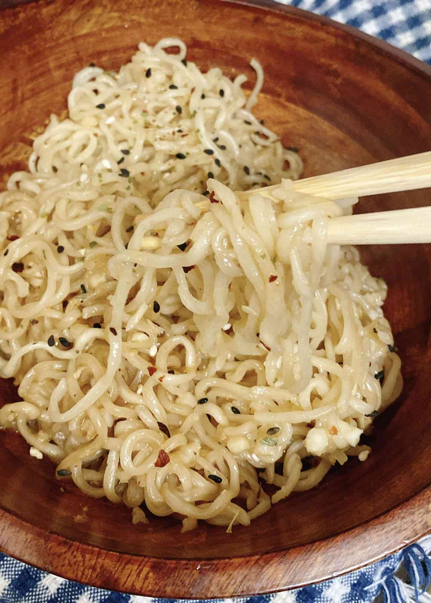

Oodles Of Noodles

Description
A simple quick meal of Ramen
Ingridients
- Boiling water
- A pack of your favorite brand of noodles I Prefer Ramen
Steps to making noodles
- Place water in a pot for 3 minutes or until the water starts boiling
- Once the water starts boiling place the noodles inside of the water for about 3 minutes
- When the noodles reaches the consistancy that you likes take them out and pour into a bowl
- Place the noodles inside the bowl in season to your likening
- You can add chicken , egg , steak to your ramen to enhance the flavor